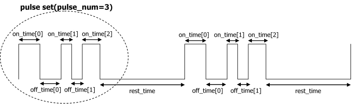

typedef struct
{
u32 pulse_num;
u32 rest_time;
u32 on_time[VIB_PULSE_NUM_MAX];
u32 off_time[VIB_PULSE_NUM_MAX];
u32 repeat_num;
} VIBPulseState;パルス振動のステータスを指定します。
パルスはパルスセットと呼ばれる最大 VIB_PULSE_NUM_MAX 回の ON-OFF と、常に OFF となる休止時間から構成されています。
1.5ms の ON、1.5ms の OFF、1.5msの ON というパルスが標準的な振動で、これによって最も強い振動を発生させることができます。
VIBPulseState の値は、ハードウェア仕様上、以下のルールを守る必要があります。
なお、以下のルールは VIB_StartPulse 関数が呼ばれた際にチェックされます。

| pulse_num | 一回のパルスで何回を発生させるか。1以上 VIB_PULSE_NUM_MAX 以下である必要があります。 |
| rest_time | パルスセット間の休止時間の長さ。1=0.1ミリ秒となります。 |
| on_time | 各ON時間の長さ。0より大きい値としてください。1=0.1ミリ秒となります。 |
| off_time | 各OFF時間の長さ。0より大きい値としてください。1=0.1ミリ秒となります。off_time[pulse_num-1] は使用されません。 |
| repeat_num | パルスセットを繰り返す数。0の時は、終わりなく繰り返します。 |
2006/01/30 初版